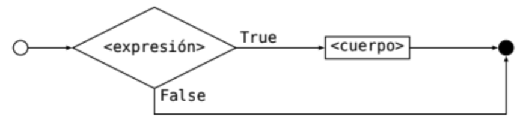
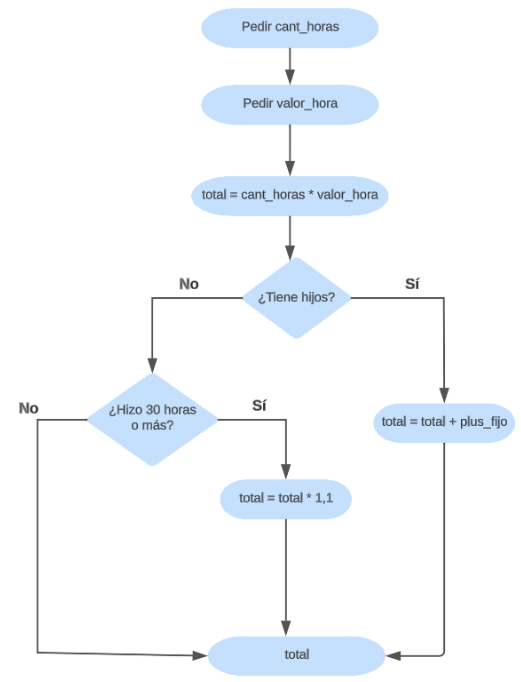

5 > 3TrueEjemplo Leer un número y, si el número es positivo, imprimir en pantalla “Número positivo”.
Necesitamos decidir de alguna forma si nuestro número \(x\) es positivo (>0) o no. Para resolver este problema, introducimos una nueva instrucción, llamada condicional: if.
if <expresion>:
<cuerpo>Donde if es una palabra reservada, <expresion> es una condición y <cuerpo es un bloque de código que se ejecuta sólo si la condición es verdadera.
Por lo tanto, antes de seguir explicando sobre la instrucción if, debemos entender qué es una condición. Estas expresiones tendrán valores del tipo sí o no.
Las expresiones booleanas forman parte de la lógica binomial, es decir, sólo pueden tener dos valores: True o False. Estos valores no tienen elementos en común, por lo que no se pueden comparar entre sí. Por ejemplo, True > False no tiene sentido. Y además, son complementarios: algo que no es True, es False; y algo que no es False, es True. Son las únicas dos opciones posibles.
Python, además de los tipos numéricos como inty float, y de las cadenas de caracteres str, tiene un tipo de datos llamado bool. Este tipo de datos sólo puede tener dos valores: True o False. Por ejemplo:
n = 3 # n es de tipo 'int' y tiene valor 3
b = True # b es de tipo 'bool' y tiene valor TrueLas expresiones booleanas se pueden construir usando los operadores de comparación: sirven para comparar valores entre sí, y permiten construir una pregunta en forma de código.
Por ejemplo, si quisiéramos saber si 5 es mayor a 3, podemos construir la expresión:
5 > 3TrueComo 5 es en efecto mayor a 3, esta expresión, al ser evaluada, nos devuelve el valor True.
Si quisiéramos saber si 5 es menor a 3, podemos construir la expresión:
5 < 3FalseComo 5 no es menor a 3, esta expresión, al ser evaluada, nos devuelve el valor False.
Las expresiones booleanas de comparación que ofrece Python son:
| Expresión | Significado |
|---|---|
a == b |
a es igual a b |
a != b |
a es distinto de b |
a < b |
a es menor que b |
a > b |
a es mayor que b |
a <= b |
a es menor o igual que b |
a >= b |
a es mayor o igual que b |
Veamos algunos ejemplos:
5 == 5
5 != 5
5 < 5
5 >= 5
5 > 4
5 <= 4Te recomendamos probar estas expresiones para ver qué valores devuelven. Podés hacerlo de dos formas:
resultado = 5 == 5
print(resultado)print(5 == 5)Además de los operadores de comparación, Python también tiene operadores lógicos, que permiten combinar expresiones booleanas para construir expresiones más complejas. Por ejemplo, quizás no sólo queremos saber si 5 es mayor a 3, sino que también queremos saber si 5 es menor que 10. Para esto, podemos usar el operador and:
5 > 3 and 5 < 10Python tiene tres operadores lógicos: and, or y not. Veamos qué hacen:
| Operador | Significado |
|---|---|
a and b |
El resultado es Truesolamente si aes Truey bes True. Ambos deben ser True, de lo contrario devuelve False. |
a or b |
El resultado es Truesi aes True o bes True (o ambos). Si ambos son False, devuelve False. |
not a |
El resultado es True si aes False, y viceversa. |
Algunos ejemplos:
5 > 2 and 5 > 3True5 > 2 or 5 > 3True5 > 2 and 5 > 6False5 > 2 or 5 > 6True5 > 6Falsenot 5 > 6True5 > 2Truenot 5 > 2FalseLas expresiones lógicas complejas (con más de un operador), se resuelven al igual que en matemáticas: respetando precedencias y de izquierda a derecha. También admiten el uso de () para alterar las precedencias.
Sin embargo, si no tenemos precedencias explícitas con (), Python prioriza resolver primero los and, luego los or y por último los not.
Ejemplos:
True or False and FalseTruePor la prioridad del and, primero se resuelve False and False, que da False. Luego, se resuelve True or False, que da True.
True or False or FalseTrueComo no hay and, se resuelve de izquierda a derecha. Primero se resuelve True or False, que da True. Luego, se resuelve True or False, que da True.
(True or False) and FalseFalseComo hay paréntesis, se resuelve primero lo que está dentro de los paréntesis. True or False da True. Luego, True and False da False.
Volvamos al problema inicial: Queremos saber, dado un número \(x\), si es positivo o no, e imprimir un mensaje en consecuencia.
Recordemos la instrucción if que acabamos de introducir y que sirve para tomar decisiones simples. Esta instrucción tiene la siguiente estructura:
if <expresion>:
<cuerpo>donde:
<expresion>debe ser una expresión lógica.<cuerpo>es un bloque de código que se ejecuta sólo si la expresión es verdadera.
ifComo ahora ya sabemos cómo construir condiciones de comparación, vamos a comparar si nuestro número x es mayor a 0:
def imprimir_si_positivo(x):
if x > 0:
print("Número positivo")Podemos probarlo:
imprimir_si_positivo(5)
imprimir_si_positivo(-5)
imprimir_si_positivo(0)Número positivoComo vemos, si el número es positivo, se imprime el mensaje. Pero si el número no es positivo, no se imprime nada. Necesitamos además agregar un mensaje “Número no positivo”, si es que la condición no se cumple.
Modifiquemos el diseño: 1. Si \(x>0\), se imprime “Número positivo”. 2. En caso contrario, se imprime “Número no positivo”.
Podríamos probar con el siguiente código:
def imprimir_si_positivo(x):
if x > 0:
print("Número positivo")
if not x > 0:
print("Número no positivo")Otra solución posible es:
def imprimir_si_positivo(x):
if x > 0:
print("Número positivo")
if x <= 0:
print("Número no positivo")Ambas están bien. Si lo probamos, vemos que funciona:
imprimir_si_positivo(5)
imprimir_si_positivo(-5)
imprimir_si_positivo(0)Número positivo
Número no positivo
Número no positivoSin embargo, hay una mejor forma de hacer esta función. Existe una condición alternativa para la estructura de decisión if, que tiene la forma:
if <expresion>:
<cuerpo>
else:
<cuerpo>donde if y else son palabras reservadas. Su efecto es el siguiente:
<expresion>.<expresion> es verdadera, se ejecuta el <cuerpo> del if.<expresion> es falsa, se ejecuta el <cuerpo> del else.
if-elsePor lo tanto, podemos reescribir nuestra función de la siguiente forma:
def imprimir_si_positivo_o_no(x): # le cambiamos el nombre
if x > 0:
print("Número positivo")
else:
print("Número no positivo")Probemos:
imprimir_si_positivo_o_no(5)
imprimir_si_positivo_o_no(-5)
imprimir_si_positivo_o_no(0)Número positivo
Número no positivo
Número no positivo¡Sigue funcionando!
Lo importante a destacar es que, si la condición del if es verdadera, se ejecuta el <cuerpo> del if y no se ejecuta el <cuerpo> del else. Y viceversa: si la condición del if es falsa, se ejecuta el <cuerpo> del else y no se ejecuta el <cuerpo> del if. Nunca se ejecutan ambos casos, porque son caminos paralelos que no se cruzan, como vimos en el diagrama de flujo más arriba.
Supongamos que ahora queremos imprimir un mensaje distinto si el número es positivo, negativo o cero. Podríamos hacerlo con dos decisiones consecutivas:
def imprimir_si_positivo_negativo_o_cero(x):
if x > 0:
print("Número positivo") # cuerpo del primer if
else:
if x == 0: #
print("Número cero") #
else: #
print("Número negativo") # todo esto es el cuerpo del primer elseA esto se le llama anidar, y es donde dentro de unas ramas de la decisión (en este caso, la del else), se anida una nueva decisión. Pero no es la única forma de implementarlo. Podríamos hacerlo de la siguiente forma:
def imprimir_si_positivo_negativo_o_cero(x):
if x > 0:
print("Número positivo")
elif x == 0:
print("Número cero")
else:
print("Número negativo")La estructura elif es una abreviatura de else if. Es decir, es un else que tiene una condición. Su efecto es el siguiente:

if-elif-else del ejemplo<expresion> del if.<expresion> es verdadera, se ejecuta el <cuerpo> del if.<expresion> es falsa, se evalúa la <expresion> del elif.<expresion> del elif es verdadera, se ejecuta su <cuerpo>.<expresion> del elif es falsa, se ejecuta el <cuerpo> del else.En Python se consideran verdaderos (True) también todos los valores numéricos distintos de 0, las cadenas de caracteres que no sean vacías, y cualquier valor que no sea vacío en general. Los valores nulos o vacíos son falsos.
if x == 0:es equivalente a:
if not x:Y además, existe el valor especial None, que representa la ausencia de valor, y es considerado falso. Podemos preguntar si una variable tiene el valor None usando el operador is:
if x is None:o también:
if not x:Debemos calcular el pago de una persona empleada en nuestra empresa. El cálculo debe hacerse por la cantidad de horas trabajadas, y se le debe pedir al usuario la cantidad de horas y cuánto vale cada hora.
Adicionalmente, se abona un plus fijo de guardería a todo empleado/a con infantes a su cargo. Y se paga un 10% de incentivo a todo empleado/a que haya trabajado 30 horas o más y no reciba el plus por guardería.
Pista: pensar los distintos tipos de liquidación:
a) Empleado/a con menos de 30 horas y sin infantes a cargo.
b) Empleado/a con 30 horas o más y sin infantes a cargo.
c) Empleado/a con menos de 30 horas y con infantes a cargo.
d) Empleado/a con 30 horas o más y con infantes a cargo.

Supongamos que en una fábrica se nos pide hacer un procedimiento para entrenar al personal nuevo. Para comenzar se nos encarga la descripción de uno muy simple: descarga de cajas de material del camión del proveedor y almacenamiento en el depósito. Así que aplicamos lo que venimos aprendiendo hasta ahora sobre algoritmos y describimos la operación para la descarga de 3 cajas:
1 Abrir la puerta del depósito y encender luces
2 Ir al garage o playón donde estacionó el camión
3 Abrir las puertas traseras de la caja del transporte
4 Tomar una caja con ambas manos, asegurándola para no tirarla
5 Caminar sosteniendo la caja hasta el depósito
6 Colocar la caja sobre el piso en el sector correspondiente
7 Ir al garage o playón donde estacionó el camión
8 Tomar OTRA caja con ambas manos, asegurándola para no tirarla
9 Caminar sosteniendo la caja hasta el depósito
10 Colocar la caja sobre la caja anterior
11 Ir al garage o playón donde estacionó el camión
12 Tomar OTRA caja con ambas manos, asegurándola para no tirarla
13 Caminar sosteniendo la caja hasta el depósito
14 Colocar la caja sobre la caja anterior
15 Apagar luces y cerrar puerta del depósito
16 Ir al garage o playón donde estacionó el camión
17 Cerrar y trabar puertas del camión
18 Avisar fin de descarga al transportistaYa lo tenemos. Ahora la persona a cargo dice que en el camión suelen venir entre 5 y 15 cajas de material y pide que definas el mismo procedimiento para todos los casos posibles. Notemos que se repiten las instrucciones 2, 3, 4, 5 y 6 para cada caja ¿Qué hacemos? ¿Vamos a seguir copiando y pegando las instrucciones para cada caja? ¿Y si algún día vienen más de 15 o menos de 5? ¿Vamos a tener una lista de instrucciones distinta para cada cantidad de cajas que puedan venir? Parece ser necesario hacer algo más genérico que le facilite la vida a todos. Una nueva versión:
1 Abrir la puerta del depósito y encender luces
2 Ir al garage o playón donde estacionó el camión
3 Abrir las puertas traseras de la caja del transporte
4 Tomar una caja con ambas manos, asegurándola para no tirarla
5 Caminar sosteniendo la caja hasta el depósito
6 Si es la primera caja, colocarla sobre el piso en el sector correspondiente;
si no, apilarla sobre la anterior;
salvo que ya haya 3 apiladas,
en ese caso colocarla a la derecha sobre el piso
7 Ir al garage o playón donde estacionó el camión
8 Repetir 4,5,6,7 mientras queden cajas para descargar
9 Cerrar y trabar puertas del camión
10 Avisar fin de descarga al transportista
11 Volver a depósito
12 Apagar luces y cerrar puerta del depósitoEsta descripción es bastante más compacta y cubre todas las posibles cantidades de cajas en un envío (habituales y excepcionales), de modo que con una única página en el manual de procedimientos será suficiente.
Sin embargo, los algoritmos que venimos escribiendo se parecen más al primer procedimiento que al segundo. ¿Cómo podemos mejorarlos?
El ciclo, bucle o sentencia iterativa es una instrucción que permite ejecutar un bloque de código varias veces. En Python, existen dos tipos de ciclos: while y for.
forLa instrucción for nos indica que queremos repetir un bloque de código una cierta cantidad de veces. Por ejemplo, si queremos imprimir los números del 1 al 10, podemos hacerlo de la siguiente forma:
for i in range(1, 11):
print(i)1
2
3
4
5
6
7
8
9
10El ciclo for incluye una línea de inicialización y una línea de <cuerpo>, que puede tener una o más instrucciones. El ciclo definido es de la forma:
for <nombre> in <expresion>:
<cuerpo>El ciclo se dice definido porque una vez evaluada la <expresion>, se sabe cuántas veces se va a ejecutar el <cuerpo>: tantas veces como elementos tenga la <expresion>.
La expresión puede indicarse con range:
range(n) devuelve una secuencia de números desde 0 hasta n-1.range(a, b) devuelve una secuencia de números desde a hasta b-1.range(a, b, c) devuelve una secuencia de números desde a hasta b-1, de a c en c.Se podría decir que el range puede recibir 3 valores: range(start, end, step) o range(inicio, fin, paso), donde:
start o inicio es el valor inicial de la secuencia. Por defecto es 0.end o fin es el valor final de la secuencia. No se incluye en la secuencia.step o paso es el incremento entre cada elemento de la secuencia. Por defecto es 1.Si le pasamos un sólo parámetro, lo toma como end.
Si le pasamos dos, los toma como start y end.
Y si le pasamos tres, los toma como start, end y step.
¿Te suena quizás a algo que ya vimos? Quizás… ¿los slices de las cadenas de caracteres?
Además, la variable <nombre> va a ir tomando el valor de cada elemento de la <expresion> en cada iteración. En nuestro ejemplo de imprimir los números del 1 al 10, vemos que i toma los valores 1, 2, 3, 4, 5, 6, 7, 8, 9 y 10, en ese orden.
Ejemplo
Se pide una función que imprima todos los números pares entre dos números dadosayb. Se considera queaybson siempre números enteros positivos, y queaes menor queb.
def imprimir_pares(a, b):
for i in range(a, b):
if i % 2 == 0: # si el resto de dividir por 2 es cero, es par
print(i)
imprimir_pares(1,15)2
4
6
8
10
12
14
Ejemplo
Se pide una función que imprima todos los números del 1 al 10, en orden inverso.
def imprimir_inverso():
for i in range(10, 0, -1):
print(i)
imprimir_inverso()10
9
8
7
6
5
4
3
2
1
Como dijimos más arriba, la expresión del for puede ser cualquier expresión que devuelva una secuencia de valores. A estas expresiones se las llama iterables.
Un ciclo for también podría iterar sobre elementos de una lista (tema que vamos a ver más adelante), o sobre caracteres de una palabra. Por ejemplo:
for num in [1, 3, 7, 5, 2]:
print(num)1
3
7
5
2for c in "Hola":
print(c)H
o
l
awhileLa instrucción while nos indica que queremos repetir un bloque de código mientras se cumpla una condición. Por ejemplo, si queremos imprimir los números del 1 al 10, podemos hacerlo de la siguiente forma:
i = 1
while i < 11:
print(i)
i += 11
2
3
4
5
6
7
8
9
10El ciclo while incluye una línea de inicialización y una línea de <cuerpo>, que puede tener una o más instrucciones. El ciclo definido es de la forma:
while <expresion>:
<cuerpo>El ciclo se dice indefinido porque una vez evaluada la <expresion>, no se sabe cuántas veces se va a ejecutar el <cuerpo>: se ejecuta mientras la <expresion> sea verdadera.
Para usar la instrucción while, tenemos cuatro aspectos para armar y afinar correctamente:
Antes, para la instrucción for, sólo considerábamos el cuerpo y la condición. Ahora, además, tenemos que considerar el estado previo y el paso.
El cuerpo es la porción de código que se repetirá mientras la condición sea verdadera.
La condición es la expresión booleana que se evalúa para decidir si se ejecuta el cuerpo o no.
El estado previo es el estado de las variables antes de ejecutar el cuerpo. En general, se refiere al estado de las variables que participan de la condición.
El paso es la porción de código que modifica el estado previo. En general, se refiere a la modificación de las variables que participan de la condición.
Con los ciclos while hay que tener mucho cuidado de no caer en un loop infinito. Esto sucede cuando la condición siempre es verdadera, y el cuerpo no modifica el estado previo. Por ejemplo:
while True: # más adelante sobre el uso de `while True`
print("Hola")o bien:
i = 0
while i < 10:
print(i) # el valor de i nunca cambiaEjercicio
Repetir el ejercicio 7.b de la guía 2 usando un ciclowhile. Repetir usando un ciclofor. ¿Qué diferencias hay entre ambos?
break y continueson dos palabras clave en Python que se utilizan en bucles (tanto for como while) para alterar el flujo de ejecución del bucle.
La declaración break se usa para salir inmediatamente de un bucle antes de que se complete su iteración normal. Cuando se encuentra una declaración break dentro de un bucle, el bucle for o while se detiene inmediatamente y continúa con la ejecución de las instrucciones que están después del mismo.
Por ejemplo, supongamos que queremos encontrar al primer número múltiplo de 3 entre 10 y 30:
numero = 10
while numero <= 30:
if numero % 3 == 0:
print("El primer número múltiplo de 3 es:", numero)
break
numero += 1El primer número múltiplo de 3 es: 12for numero in range(10, 31):
if numero % 3 == 0:
print("El primer número múltiplo de 3 es:", numero)
breakEl primer número múltiplo de 3 es: 12La declaración continue se usa para omitir el resto del código dentro de una iteración actual del bucle y continuar con la siguiente iteración. Cuando se encuentra una declaración continue dentro de un bucle, el bucle for o while salta a la siguiente iteración del bucle sin ejecutar las instrucciones que están después del continue.
Por ejemplo, supongamos que queremos imprimir todos los números entre 1 y 20, excepto los múltiplos de 4:
numero = 1
while numero <= 20:
if numero % 4 == 0:
numero += 1
continue
print(numero)
numero += 11
2
3
5
6
7
9
10
11
13
14
15
17
18
19for numero in range(1, 21):
if numero % 4 == 0:
continue
print(numero)1
2
3
5
6
7
9
10
11
13
14
15
17
18
19Notemos que tanto para el uso de break como de continue, si el código se encuentra con uno de ellos en la ejecución, no ejecuta nada posterior a ellos: en el caso de break, corta o interrumpe la ejecución del bucle; en el case de continue, saltea el resto del código de esa iteración y pasa a la siguiente, volviendo a evaluar la condición si el bucle es while.
Cuando estamos dentro de una función, la instrucción return nos permite devolver un valor y salir de la función. Ahora, si además estamos dentro de un ciclo, también nos permite salir del mismo sin ejecutar el resto del código.
Por ejemplo:
def obtener_primer_par_desde(n):
for num in range(n, n+10):
print(f"Analizando si el número {num} es par")
if num % 2 == 0:
return num
return Noneobtener_primer_par_desde(9)Analizando si el número 9 es par
Analizando si el número 10 es par10Como vemos, la función obtener_primer_par_desde recibe un número n, y devuelve el primer número par que encuentra a partir de n. Si no encuentra ningún número par, devuelve None.
Si encuentra un número par, no sigue analizando el resto de los números. Usa return para salir del ciclo y devuelve el número encontrado.
Es importante no ser redundantes con el código y no “hacer preguntas” que ya sabemos.
while <condicion>:
<cuerpo>
<codigo cuando ya no se cumple la condición>Veamos un ejemplo:
numero = 0
while numero < 3:
print(numero)
numero += 1
if numero == 3:
print("El número es 3")
else:
print("El número no es 3")El output va a ser siempre el mismo:
1
2
3
El número es 3¿Por qué? Porque nuestra condición del while es lo que dice “mientras esto se cumpla, yo repito el bloque del código de adentro”. Nuestra condición es que numero < 3. En el momento en que numero llega a 3, el bucle whiledeja de cumplir con la condición, y la ejecución se corta, se termina con el bucle.
Es decir, el bloque
if numero == 3:
print("El número es 3")siempre se ejecuta.
Y el bloque
else:
print("El número no es 3")nunca se ejecuta.
Por lo tanto, podemos reescribir el código de la siguiente forma:
numero = 0
while numero < 3:
print(numero)
numero += 1
print("El número es 3")
De la misma forma, no tendría sentido hacer algo así:
numero = 0
while numero < 3:
print(numero)
numero += 1
continue
if numero == 3:
breakif numero == 3 está absolutamente de más. Si numero es 3, el bucle while no se ejecuta, por lo que nunca se va a llegar a esa línea de código. No es necesario “re-chequear” la condición del while dentro del mismo, porque asumimos que si llegamos a esa línea de código, es porque la condición se cumplió. Por lo tanto, podemos reescribir el código de la siguiente forma:numero = 0
while numero < 3:
print(numero)
numero += 1
continueEste es nuestro código final, escrito de forma correcta:
numero = 0
while numero < 3:
print(numero)
numero += 1La instrucción while está hecha para que se ejecute mientras la condición sea verdadera. Pero, ¿qué pasa si usamos while True? Lo que pasa al usar while True es que nuestro código se vuelve más propenso al error: si no tenemos cuidado, podemos caer en un loop infinito.
Como no tenemos una condición a evaluar ni modificar en cada iteración, el bucle se ejecuta infinitamente. Dependería de nosotros, como programadores, que el bucle se corte en algún momento. Es decir, dependería de que nos acordemos de poner dentro del while alguna decisión que haga que el bucle se corte. Y si por alguna razón no nos acordamos, el bucle se ejecutaría infinitamente, dejando al programa “congelado” o “colgado”, sin responder, y usando todos los recursos de la computadora.
En pocas palabras, podemos afirmar que el uso de while True en Python es una mala práctica de programación, y recomendamos evitarla fuertemente.
while <condicion>:
<cuerpo>La mejor decisión que se puede tomar para el while es asumir que, durante toda su ejecución exceptuando la última línea, la condición se cumple. Es decir, que el cuerpo del bucle se ejecuta mientras la condición sea verdadera. Por lo tanto, si queremos modificar la condición, debemos hacerlo en la última línea del cuerpo.
Por ejemplo, esto no es correcto:
# Se deben imprimir los números 0, 1, 2
numero = 0
while numero < 3:
numero += 1 # actualización de la condición
print(numero)1
2
3Como vemos, se imprimen los números 1, 2, 3; pero no el 0. Esto es porque estamos modificando la condición ni bien empieza el bucle, y no en la última línea del cuerpo.
La forma correcta de hacerlo sería:
# Se deben imprimir los números 0, 1, 2
numero = 0
while numero < 3:
print(numero)
numero += 1 # actualización de la condición0
1
2De esta forma, todo lo que se encuentre antes de la última línea del cuerpo se ejecuta mientras la condición sea verdadera. Y la última línea del cuerpo es la que modifica la condición.
Escribir un programa que pida al usuario un número entero positivo y muestre por pantalla todos los números pares desde 1 hasta ese número.
Resolver primero usando un ciclo while y luego usando un ciclo for.
Escribir un programa que pida al usuario un número par. Mientras el usuario ingrese números que no cumplan con lo pedido, se lo debe volver a solicitar.
Pista: resolver usando while.